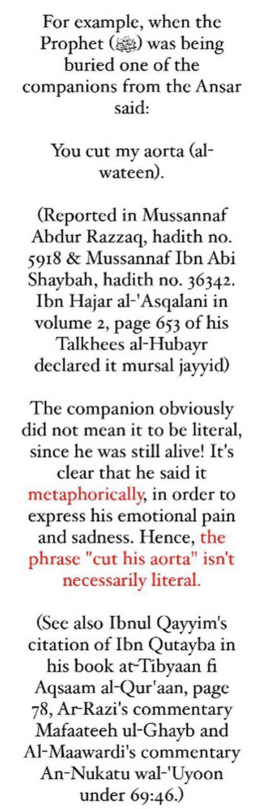
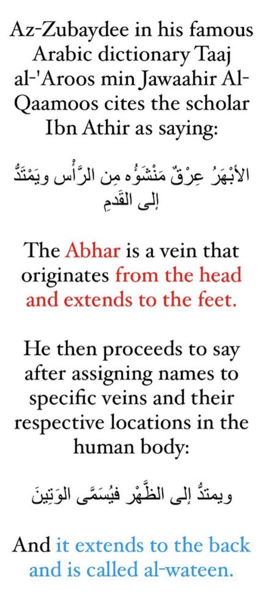
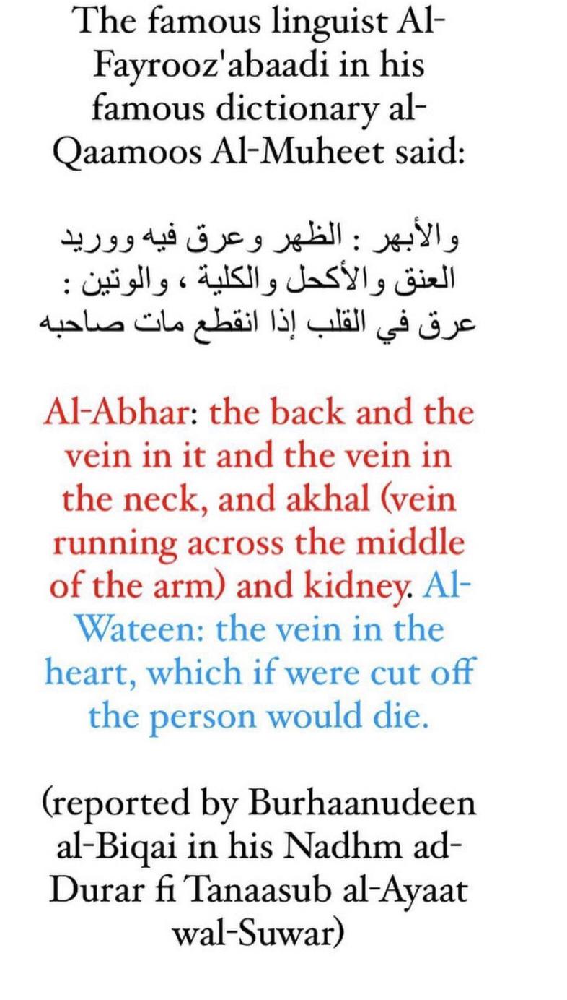
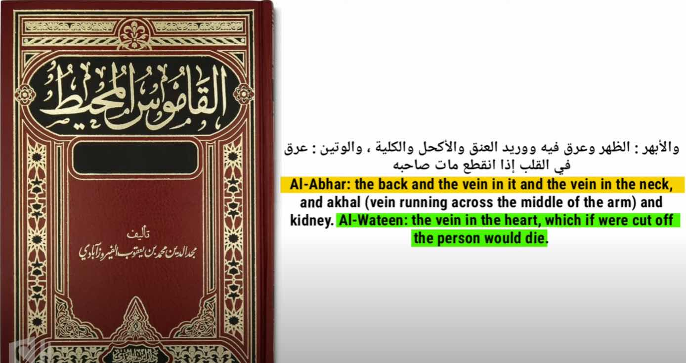
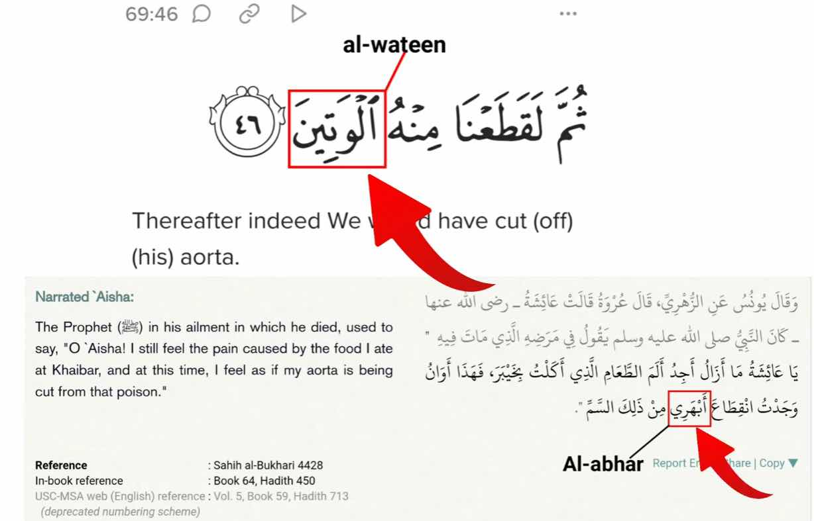
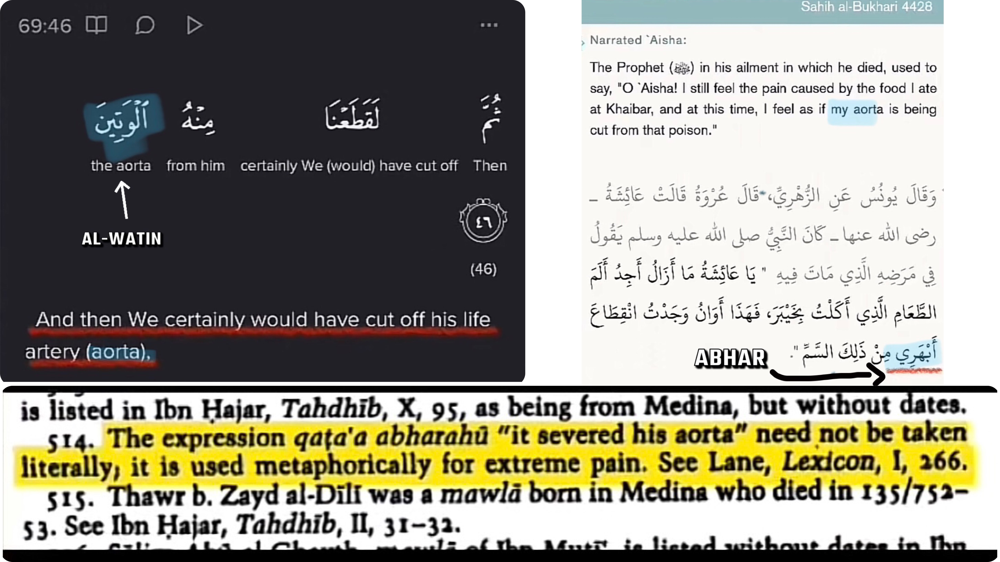

So a lot of people tend to use form3 argument
1- Allah couldn’t protect his prophet
2- aorta argument
3- prophet died poisoned
What they don’t actually know is that the hadith goes against them
Narrated Abu Hurairah:
The Messenger of Allah (ﷺ) would accept a present, but would not accept alms (sadaqah). And Wahb bin Baqiyyah
narrated to us, elsewhere, from Khalid, from Muhammad ibn Amr said on the authority of AbuSalamah,
and he did not mention the name of Abu Hurairah: The Messenger of Allah (ﷺ) used to accept presents
but not alms (sadaqah).
This version adds: So a Jewess presented him at Khaybar with a roasted sheep which she had poisoned.
The Messenger of Allah (ﷺ) ate of it and the people also ate.
He then said: Take away your hands (from the food), for it has informed me that it is poisoned.
Bishr ibn al-Bara' ibn Ma'rur al-Ansari died.
So he (the Prophet) sent for the Jewess (and said to her): What motivated you to do the work you have done?
She said: If you were a prophet, it would not harm you; but if you were a king, I should rid the people of you.
The Messenger of Allah (ﷺ) then ordered regarding her and she was killed. He then said about the pain of which
he died: I continued to feel pain from the morsel which I had eaten at Khaybar. This is the time when
it has cut off my aorta.
-Source: Sunan Abi dawud 4512
Grade: Hassan Sahih (authentic) (Al-Albani)
So first how did he know it was poisoned other than a non human source
Second this happened at the battle of khaybar khaybar was 7 A.H the prophet died 11 A.H so he died 4 years
after being poisoned and his friend died the same day they ate in
So to start with that itself is proof he is a true prophet
How about 5:67?
5:67 means that the prophet would be protected untill he finialises his message after that he can die
And 5:3 reveals the message was done
Now for the aorta argument
The word in the hadith is abhar not watin there is a difference between both



Now did he die poisoned ?
No that is not what it is in fathul bari it explains he felt the pain from time to time so when he finally had a
disease the time of pain came together he died by the disease or sickness he had the prophet peace
and blessings be upon died out of sickness.
Analogy: if someone had a car accident 4 years before his death and every day he felt this pain does it mean he
died out of car crash or not or not no he didn’t he just felt same pain at the time of his death
Now Christians having there God crucified and they are contesting the idea of prophet muhammed may peace and
blessings be upon him died as a martyr
A last argument is that if a person ate 7 ajwa dates he would be protected from magic and poison and after what
we saw he actually was and he didn’t die poisoned


